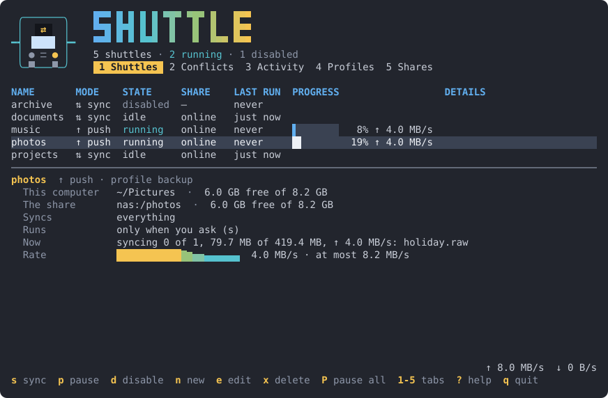

No mounts, no root
shuttle speaks SMB 2/3 and NFSv3 itself, as you, from a user service. No fstab entry, no sudo, no mount to keep alive. An already-mounted path works too, for NFSv4.
Push, pull and sync folders between your Linux or Windows desktop and a NAS, over SMB or NFS, with no mounts and no root. Set it up in the terminal; a user service runs it; GNOME, or the icon by Windows' clock, shows what it is doing. And the same on your Android phone, in an app.
↑ push ↓ pull ⇅ sync · real time, on a schedule, when the share comes online, or when you ask
The problem
Keeping folders on a Linux desktop in step with folders on a NAS or file server means picking between tools that each leave something out.
It has no idea what happened since the last run, so it cannot tell a file you deleted from one that is new on the other side. A safe two-way sync is out of reach.
It syncs both ways well, but only with another Syncthing on the other side. An SMB or NFS share is not one.
The job is tied to an fstab entry, root, and a mount that is not there when you are away from home or the VPN is down.
None shows what it is doing in GNOME, or lets you pause from Quick Settings when you are on a slow connection.
The mission
Each folder pair is a shuttle: it pushes, pulls or syncs both ways against a share it connects to directly. You describe it once, in a terminal interface or a plain config file, and it keeps going: in real time, on a schedule, or whenever the share is back. When something needs you, a conflict or a share gone missing, it says so, on the desktop, and waits.
Nothing is lost on the way: every write lands whole or not at all, a scan that failed never turns into deletions, and what a sync replaces is kept.
What sets it apart
shuttle speaks SMB 2/3 and NFSv3 itself, as you, from a user service. No fstab entry, no sudo, no mount to keep alive. An already-mounted path works too, for NFSv4.
A record of every file's last synced state tells "deleted here" from "new there", and a change on both sides becomes a conflict, settled your way: keep both, newest wins, or ask.
Writes go to a temp name and are renamed into place. A failed or partial scan never deletes; a run that would delete too much at once is held for you. Replaced files can be versioned, and a run that would not fit stops before it copies.
A top-bar indicator with the live transfer rate, a Quick Settings toggle to pause everything or one shuttle, and notifications that open the terminal interface right where something waits for you.
Main features
One way to the share, one way from it, or both. Push and pull mirror deletions, or add only.
Real time as files settle, on an interval or at set times, when the share comes back online, or only when you ask. Combine them.
Reusable settings, "Live sync" or "Nightly backup", that a shuttle overrides one setting at a time.
Keep both, newest wins, or hold the file until you choose, with both copies' size and time side by side.
Keep replaced files for N days, the last N versions, or on a staggered schedule, with a size cap.
Mark files and folders on a tree of the share or of this computer; or ignore by gitignore-style patterns.
Up and down, per shuttle, and a global cap across all of them that applies from the next file.
Free space on both sides is shown, and a run that would not fit stops before it copies, saying how much it needed.
Share passwords live in GNOME Keyring or Windows' Credential Manager, never in the config file, logs or process arguments.
Edit config.toml by hand or in the interface, comments kept: changes apply within a second, no restart.
Every copy, deletion, conflict and error, newest first, kept for 30 days, per shuttle or all together.
shuttle status, sync, pause, resume and activity, for scripts and quick checks.
An Android app, from Android 11: the same engine and every setting, set up in its own tabs, real time in the background, and backups of its setup. A signed APK in each release.
The terminal interface
Progress, transfer rates and whether each share is online; under them, the
selected shuttle in full, its rate drawn as it goes. Tabs for conflicts, the activity log,
profiles and shares. ? lists the keys.

The real interface, drawn from a run against a test daemon.
How it works
One binary: the terminal interface, the service and the command line. The service does the syncing; everything else asks it over the session bus.
Install
From the latest release, as a package (amd64; arm64 built, not yet tested), then enable the service:
$ v=0.3.0 $ url=https://github.com/fqazzazee/shuttle/releases/download/v$v # Fedora $ sudo dnf install $url/shuttle_${v}_linux_amd64.rpm # Debian, Ubuntu $ curl -LO $url/shuttle_${v}_linux_amd64.deb $ sudo apt install ./shuttle_${v}_linux_amd64.deb # then, for you $ systemctl --user enable --now shuttle $ shuttle
Then a share, a profile and a shuttle: in the interface's tabs, or by hand
# ~/.config/shuttle/config.toml [shares.nas] type = "smb" host = "nas.example" share = "home" user = "you" # the password: in the keyring [profiles.live] mode = "sync" triggers = ["realtime", "share-available"] [shuttles.documents] profile = "live" local = "~/Documents" remote = "nas:/docs"
The README has the rest: building from source, NFS exports, the GNOME extension, every setting.
On an Android phone (Android 11 or later, arm64): download shuttle_0.3.0_android_arm64.apk
on the phone and open it. The app sets up shares, profiles and shuttles in its own tabs, and
each release installs over the last, keeping them. Every release is signed with the same key: its About
page shows the APK's SHA-256, to compare with the release's checksums.txt. See the
README.
On Windows 11 (amd64; arm64 built, not yet tested): unzip shuttle_0.3.0_windows_amd64.zip
into a folder of its own and run shuttle autostart on there: the service and an icon in the
notification area then start when you sign in, and shuttle opens the same terminal interface.
The programs are not code-signed, so Windows warns once; each release's files carry GitHub's build
attestations. See the README.
shuttle is not:
FAQ
Syncthing syncs between machines that each run Syncthing. A NAS share is not one of them. shuttle talks to the share itself, over SMB or NFS, so there is nothing to install on the NAS. For syncing machines with each other, without a share in between, Syncthing is the right tool.
No. shuttle speaks SMB 2/3 and NFSv3 itself, from a service that runs as you: no fstab entry, no sudo, no mount. A share that is already mounted works too, as a folder path.
Running as you, shuttle connects from a port above 1024. Linux servers refuse that unless the export has insecure in /etc/exports; on a Synology, tick "Allow connections from non-privileged ports". A server that speaks only NFSv4: mount it as usual and add the mount point as a share of type path.
Anything that serves SMB 2/3 or NFSv3: Samba, Windows, Synology, QNAP, TrueNAS. Its tests run against a real Samba server, the Linux kernel's NFS server, and an in-process NFS server.
It joins them: what is on one side only is copied to the other. Files that exist on both sides but differ become conflicts, settled by the shuttle's conflict setting. Nothing is overwritten silently.
That is a conflict, settled your way. Keep both saves the older copy beside the newer one under a conflict name. Newest wins keeps the latest, and versions the other if versioning is on. Ask holds the file until you choose in the Conflicts tab, with both copies' size and time.
It is built not to. A scan that fails or stops partway never turns into deletions. If a run would delete more than half of a shuttle's files at once (and at least 10), it holds those deletions until you allow them; that threshold is a setting, and can be turned off. Push and pull can be set to add only, never delete. And versioning keeps what a sync replaces or deletes.
Every share is checked every 30 seconds, and the dashboard and the top bar show it offline. A run that loses the share stops, with nothing half-written: files are written to a temporary name and renamed into place. With the share available trigger, the shuttle runs again as soon as the share is back.
In the Secret Service: GNOME Keyring on a GNOME desktop. Never in the config file, the logs, D-Bus replies or process arguments.
Only for the top-bar indicator and the Quick Settings toggle, which need GNOME Shell 50. The service, the terminal interface and the command line run on any Linux desktop with systemd and a Secret Service.
Yes: it is ~/.config/shuttle/config.toml. Save a change and it applies within a second, with no restart. A mistake keeps the previous settings running, and says what is wrong. The terminal interface edits the same file, keeping your comments and layout.
Yes, for Android 11 and later: the same engine, settings and config file as the desktop, with a wizard to add a shuttle, conflicts, activity, and backups of its setup. It is a signed APK on the releases page, not on Google Play or F-Droid; Obtainium can follow the releases.
No: it runs on Linux and Android, and it syncs with SMB and NFS shares. For cloud storage (S3, Google Drive, OneDrive), use rclone.
For personal, hobby and home-lab use, for charities, schools, public research and government, and for a company using it for its own internal operations: yes, under the PolyForm licenses. Using it to do work for someone else (consulting, contracting, managed services) needs a commercial license. The GNOME extension is GPL-2.0-or-later.
Contributing
Bug reports, ideas and pull requests are welcome. A few habits keep a change easy to review, and safe for a tool that deletes and overwrites files on both sides.
For anything beyond a typo. A rejected PR costs you more than a rejected issue; check the README's Status and Not planned sections too.
Go 1.26 or later. If the tests fail on a clean checkout, that is a bug: report it.
Two unrelated fixes are two PRs. Tests run on temporary folders and in-process servers, never a real share or your home.
Every check passes; a flaky one is said so, not rerun until it passes. The PR says what
changes for a user; its title is a type(scope): summary commit.
$ git clone https://github.com/fqazzazee/shuttle.git && cd shuttle $ pre-commit install # optional; CI runs the same checks $ make lint && make test $ make lint-extension && make test-extension # for the GNOME extension
shuttle is source-available under the PolyForm licenses, and its maintainer also grants commercial ones. By opening a pull request, you agree that your contribution may be distributed under all of those terms. Contributions to the GNOME extension are under the GPL-2.0-or-later, as the extension is. If you cannot agree, say so in the PR before it is reviewed.
Found a security issue? Do not open an issue: report it privately, as SECURITY.md says.